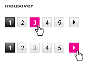
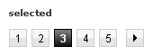

Pagination
All Paths
The default pagination should always highlight the first page and only the right arrow will be shown.

When the user mouse over the pagination the hightlight color will be magenta #ec008c
The selected state should always be black like the default state.
When there's more than 5 pages the pagination will be like the following image. If the user selects the last page only the left arrow will be shown.
Design Breakdown
The font-size for the pagination is 12 pt and the default link color is black. The height of each control is 21 pixels and the width is flexible with a minimum of 3 pixels or 0.25em padding around the text.
The padding between each page is 5 pixels and between the page number and arrow is 10 pixels.
MVT Pagination
For this new design the behavior will be the same as the one described above.


Design Breakdown
For this new design each link will have fixed width and height of 20 pixels and the font-size of 12pt.
The padding will be the same as the one for the current design.